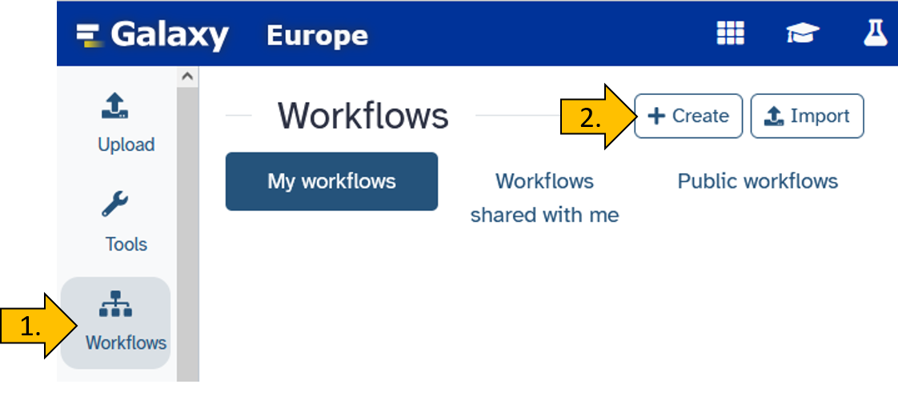
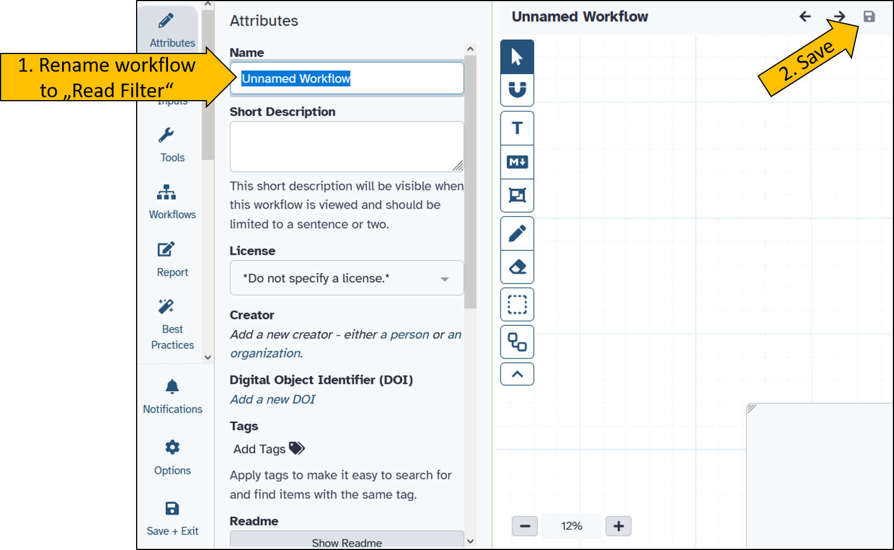
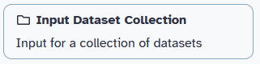
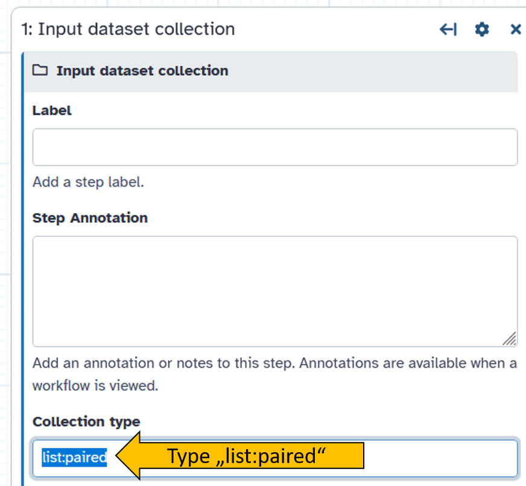
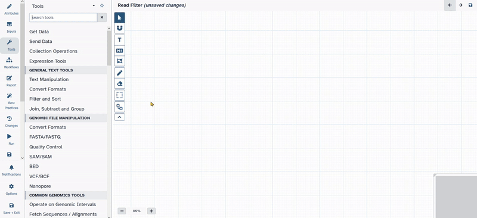
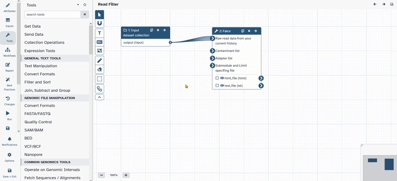
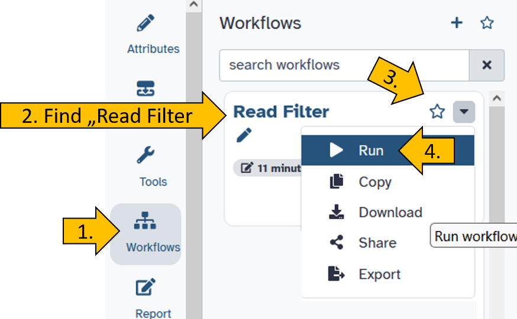
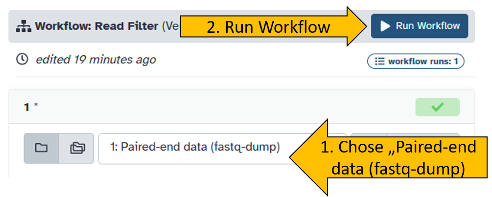
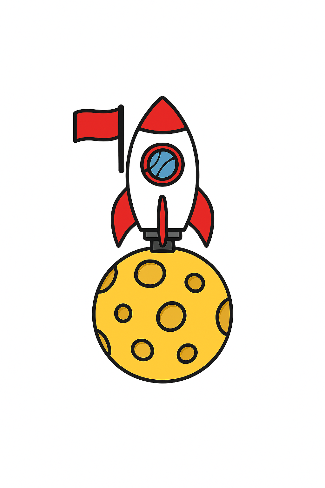
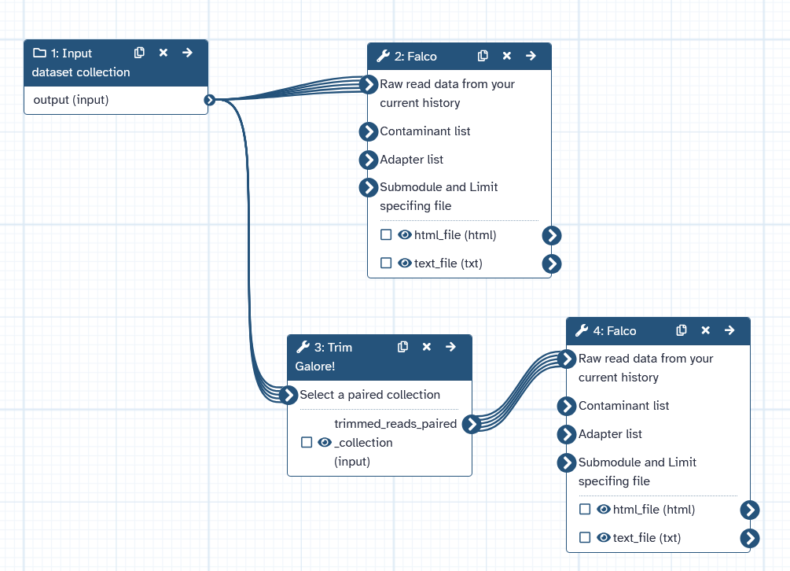

Automated workflows in Galaxy
Are you tired of doing the same thing over and over again?
In bioinformatics, some steps are repeated frequently. These include, for example, checking the quality of reads before and after filtering. It is also undesirable to constantly adjust the parameters manually, as this can quickly lead to errors.
The strength of Galaxy therefore lies in the fact that analyses can be repeated in a standardized manner.
For this purpose, so-called workflows have been developed that allow work steps and entire analyses to be performed repeatedly.
In this chapter, we will learn how to create a simple workflow.
Create a new workflow
Chose Workflow in the Activity Bar on the very left side of the Galay user interface.

After the new workflow is create we can rename it to Read Filter.

Adding tools to the workflow
After creating an empty template for a workflow, we still need to fill it with content. To do this, we perform the following steps.
Inside the empty workflow panel perform the following steps:
- Click on
Inputson the left in the action panel. - Chose
Input Dataset Collection
- Click and move
1: Input dataset collectionto the desired position. - Click on
1: Input dataset collectionand on the right side the options menue for the selected tool will open. - Change Collection type to
list:paired
- Next go to tools and chose
Falco. - The new tool appears inside the workflow window.
- Connect
1: Input dataset collectionwith2: Falco.

- Open up the tool bar again and search for
Trim Galore! - Click on
Trim Galore!and add it to your workflow. - Move the tool to the desired position.
- Click on the tool and open the options.
- Change the following parameters of
Trim Galore!- Is this library paired- or single end:
Paired Collection - Advanced settings:
Full parameter list - Trim low-quality ends from reads in addition to adapter removal (Enter phred quality score threshold):
30 - Discard reads that became shorter than length N:
50
- Is this library paired- or single end:
- Connect
1: Input dataset collectionwith3: Trim Galore!

- Save the workflow by cliching the disk symbol in the top right corner
Start the workflow
Now it’s time to test the newly created workflow.
Click on the left side on Workflows and chose your workflow Read Filter.

Set your workflow parameters by chosing the correct input file: Paired-end data (fastq-dump).


Congratulations! You have created and started a workflow.
Now try to work on the workflow until it completes the following task:
falcotool is launched on the data set.Trim Galore!.falcois run again on the result ofTrim Galore!.Set the
Trim Galore!options as follows:
Additional task:
SRR25338386? Tip: Use theDownload and Extract Reads in FASTQtool!